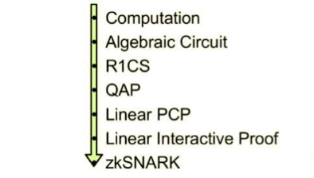
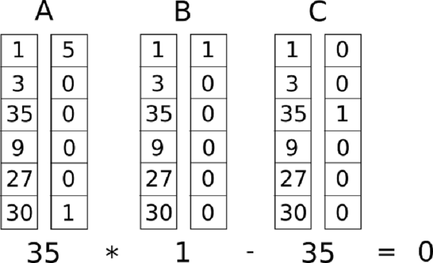
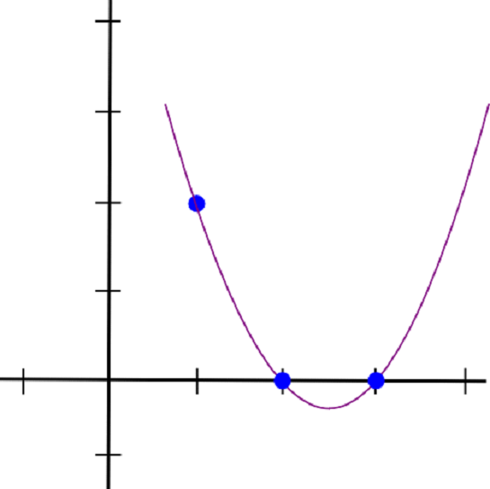
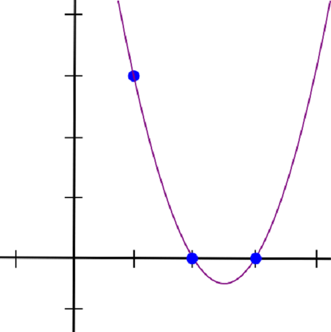
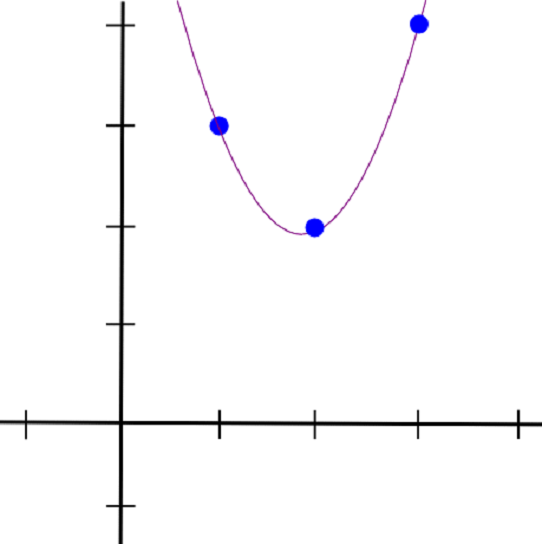
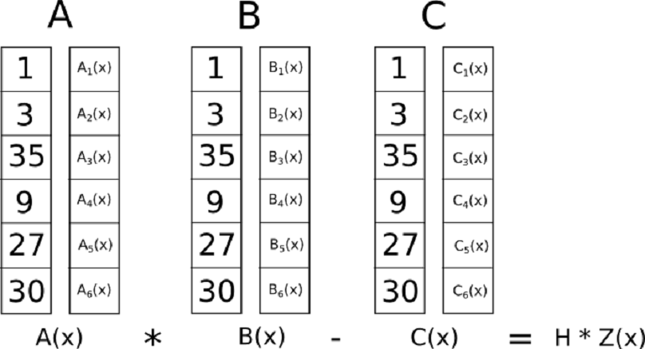

Quadratic Arithmetic Programs: from Zero to Hero
By Vitalik Buterin
9 / 3 / 2017
There has been a lot of interest lately in the technology behind zk-SNARKs, and people are increasingly trying to demystify something that many have come to call “moon math” due to its perceived sheer indecipherable complexity. zk-SNARKs are indeed quite challenging to grasp, especially due to the sheer number of moving parts that need to come together for the whole thing to work, but if we break the technology down piece by piece then comprehending it becomes simpler.
The purpose of this post is not to serve as a full introduction to zk-SNARKs; it assumes as background knowledge that (i) you know what zk-SNARKs are and what they do, and (ii) know enough math to be able to reason about things like polynomials (if the statementP(x) + Q(x) = (P + Q)(x) , where P and Q are polynomials, seems natural and obvious to you, then you’re at the right level). Rather, the post digs deeper into the machinery behind the technology, and tries to explain as well as possible the first half of the pipeline, as drawn by zk-SNARK researcher Eran Tromer here:
The steps here can be broken up into two halves. First, zk-SNARKs cannot be applied to any computational problem directly; rather, you have to convert the problem into the right “form” for the problem to operate on. The form is called a “quadratic arithmetic program” (QAP), and transforming the code of a function into one of these is itself highly nontrivial. Along with the process for converting the code of a function into a QAP is another process that can be run alongside so that if you have an input to the code you can create a corresponding solution (sometimes called “witness” to the QAP). After this, there is another fairly intricate process for creating the actual “zero knowledge proof” for this witness, and a separate process for verifying a proof that someone else passes along to you, but these are details that are out of scope for this post.
The example that we will choose is a simple one: proving that you know the solution to a cubic equation: x**3 + x + 5 == 35 (hint: the answer is 3). This problem is simple enough that the resulting QAP will not be so large as to be intimidating, but nontrivial enough that you can see all of the machinery come into play.
Let us write out our function as follows:
def qeval(x): y = x**3 return x + y + 5The simple special-purpose programming language that we are using here supports basic arithmetic (+, -, *, /), constant-power exponentiation (x**7 but not x**y) and variable assignment, which is powerful enough that you can theoretically do any computation inside of it (as long as the number of computational steps is bounded; no loops allowed). Note that modulo (%) and comparison operators (<, >, ≤, ≥) are NOT supported, as there is no efficient way to do modulo or comparison directly in finite cyclic group arithmetic (be thankful for this; if there was a way to do either one, then elliptic curve cryptography would be broken faster than you can say “binary search” and “Chinese remainder theorem”).
You can extend the language to modulo and comparisons by providing bit decompositions (eg. 13 = 2**3 + 2**2 + 1) as auxiliary inputs, proving correctness of those decompositions and doing the math in binary circuits; in finite field arithmetic, doing equality (==) checks is also doable and in fact a bit easier, but these are both details we won’t get into right now. We can extend the language to support conditionals (eg. if x < 5: y = 7; else: y = 9) by converting them to an arithmetic form: y = 7 * (x < 5) + 9 * (x >= 5); though note that both “paths” of the conditional would need to be executed, and if you have many nested conditionals then this can lead to a large amount of overhead.
Let us now go through this process step by step. If you want to do this yourself for any piece of code, I implemented a compiler here (for educational purposes only; not ready for making QAPs for real-world zk-SNARKs quite yet!).
Flattening
The first step is a “flattening” procedure, where we convert the original code, which may contain arbitrarily complex statements and expressions, into a sequence of statements that are of two forms:x = y (where y can be a variable or a number) and x = y (op) z (where op can be +, -, *, / and y and z can be variables, numbers or themselves sub-expressions). You can think of each of these statements as being kind of like logic gates in a circuit. The result of the flattening process for the above code is as follows:
sym_1 = x * x y = sym_1 * x sym_2 = y + x ~out = sym_2 + 5If you read the original code and the code here, you can fairly easily see that the two are equivalent.
Gates to R1CS
Now, we convert this into something called a rank-1 constraint system (R1CS). An R1CS is a sequence of groups of three vectors (a, b, c), and the solution to an R1CS is a vector s, where s must satisfy the equation s . a * s . b - s . c = 0, where . represents the dot product - in simpler terms, if we "zip together" a and s, multiplying the two values in the same positions, and then take the sum of these products, then do the same to b and s and then c and s, then the third result equals the product of the first two results. For example, this is a satisfied R1CS:
But instead of having just one constraint, we are going to have many constraints: one for each logic gate. There is a standard way of converting a logic gate into a (a, b, c) triple depending on what the operation is (+, -, * or /) and whether the arguments are variables or numbers. The length of each vector is equal to the total number of variables in the system, including a dummy variable ~one at the first index representing the number 1, the input variables, a dummy variable ~out representing the output, and then all of the intermediate variables (sym1 and sym2 above); the vectors are generally going to be very sparse, only filling in the slots corresponding to the variables that are affected by some particular logic gate.
First, we’ll provide the variable mapping that we’ll use:
'~one', 'x', '~out', 'sym_1', 'y', 'sym_2'
The solution vector will consist of assignments for all of these variables, in that order.
Now, we’ll give the (a, b, c) triple for the first gate:
a = [0, 1, 0, 0, 0, 0] b = [0, 1, 0, 0, 0, 0] c = [0, 0, 0, 1, 0, 0]You can see that if the solution vector contains 3 in the second position, and 9 in the fourth position, then regardless of the rest of the contents of the solution vector, the dot product check will boil down to 3 * 3 = 9, and so it will pass. If the solution vector has -3 in the second position and 9 in the fourth position, the check will also pass; in fact, if the solution vector has 7 in the second position and 49 in the fourth position then that check will still pass — the purpose of this first check is to verify the consistency of the inputs and outputs of the first gate only.
Now, let’s go on to the second gate:
a = [0, 0, 0, 1, 0, 0] b = [0, 1, 0, 0, 0, 0] c = [0, 0, 0, 0, 1, 0]In a similar style to the first dot product check, here we’re checking that sym_1 * x = y.
Now, the third gate:
a = [0, 1, 0, 0, 1, 0] b = [1, 0, 0, 0, 0, 0] c = [0, 0, 0, 0, 0, 1]Here, the pattern is somewhat different: it’s multiplying the first element in the solution vector by the second element, then by the fifth element, adding the two results, and checking if the sum equals the sixth element. Because the first element in the solution vector is always one, this is just an addition check, checking that the output equals the sum of the two inputs.
Finally, the fourth gate:
a = [5, 0, 0, 0, 0, 1] b = [1, 0, 0, 0, 0, 0] c = [0, 0, 1, 0, 0, 0]Here, we’re evaluating the last check, ~out = sym_2 + 5. The dot product check works by taking the sixth element in the solution vector, adding five times the first element (reminder: the first element is 1, so this effectively means adding 5), and checking it against the third element, which is where we store the output variable.
And there we have our R1CS with four constraints. The witness is simply the assignment to all the variables, including input, output and internal variables:
[1, 3, 35, 9, 27, 30]
You can compute this for yourself by simply “executing” the flattened code above, starting off with the input variable assignment x=3, and putting in the values of all the intermediate variables and the output as you compute them.
The complete R1CS put together is:
A [0, 1, 0, 0, 0, 0] [0, 0, 0, 1, 0, 0] [0, 1, 0, 0, 1, 0] [5, 0, 0, 0, 0, 1] B [0, 1, 0, 0, 0, 0] [0, 1, 0, 0, 0, 0] [1, 0, 0, 0, 0, 0] [1, 0, 0, 0, 0, 0] C [0, 0, 0, 1, 0, 0] [0, 0, 0, 0, 1, 0] [0, 0, 0, 0, 0, 1] [0, 0, 1, 0, 0, 0]R1CS to QAP
The next step is taking this R1CS and converting it into QAP form, which implements the exact same logic except using polynomials instead of dot products. We do this as follows. We go from four groups of three vectors of length six to six groups of three degree-3 polynomials, where evaluating the polynomials at each x coordinate represents one of the constraints. That is, if we evaluate the polynomials at x=1, then we get our first set of vectors, if we evaluate the polynomials at x=2, then we get our second set of vectors, and so on.
We can make this transformation using something called a Lagrange interpolation. The problem that a Lagrange interpolation solves is this: if you have a set of points (ie. (x, y) coordinate pairs), then doing a Lagrange interpolation on those points gives you a polynomial that passes through all of those points. We do this by decomposing the problem: for each x coordinate, we create a polynomial that has the desired y coordinate at that x coordinate and a y coordinate of 0 at all the other x coordinates we are interested in, and then to get the final result we add all of the polynomials together.
Let’s do an example. Suppose that we want a polynomial that passes through (1, 3), (2, 2) and (3, 4). We start off by making a polynomial that passes through (1, 3), (2, 0) and (3, 0). As it turns out, making a polynomial that “sticks out” at x=1 and is zero at the other points of interest is easy; we simply do:
(x - 2) * (x - 3)
Which looks like this:
Now, we just need to “rescale” it so that the height at x=1 is right:
(x - 2) * (x - 3) * 3 / ((1 - 2) * (1 - 3)) This gives us: 1.5 * x**2 - 7.5 * x + 9 We then do the same with the other two points, and get two other similar-looking polynomials, except that they “stick out” at x=2 and x=3 instead of x=1. We add all three together and get:
1.5 * x**2 - 5.5 * x + 7
 With exactly the coordinates that we want. The algorithm as described above takes O(n**3) time, as there are n points and each point requires O(n**2) time to multiply the polynomials together; with a little thinking, this can be reduced to O(n**2) time, and with a lot more thinking, using fast Fourier transform algorithms and the like, it can be reduced even further — a crucial optimization when functions that get used in zk-SNARKs in practice often have many thousands of gates. Now, let’s use Lagrange interpolation to transform our R1CS. What we are going to do is take the first value out of every a vector, use Lagrange interpolation to make a polynomial out of that (where evaluating the polynomial at i gets you the first value of the ith a vector), repeat the process for the first value of every b and c vector, and then repeat that process for the second values, the third, values, and so on. For convenience I'll provide the answers right now: A polynomials [-5.0, 9.166, -5.0, 0.833] [8.0, -11.333, 5.0, -0.666] [0.0, 0.0, 0.0, 0.0] [-6.0, 9.5, -4.0, 0.5] [4.0, -7.0, 3.5, -0.5] [-1.0, 1.833, -1.0, 0.166] B polynomials [3.0, -5.166, 2.5, -0.333] [-2.0, 5.166, -2.5, 0.333] [0.0, 0.0, 0.0, 0.0] [0.0, 0.0, 0.0, 0.0] [0.0, 0.0, 0.0, 0.0] [0.0, 0.0, 0.0, 0.0] C polynomials [0.0, 0.0, 0.0, 0.0] [0.0, 0.0, 0.0, 0.0] [-1.0, 1.833, -1.0, 0.166] [4.0, -4.333, 1.5, -0.166] [-6.0, 9.5, -4.0, 0.5] [4.0, -7.0, 3.5, -0.5] Coefficients are in ascending order, so the first polynomial above is actually 0.833 * x**3 — 5*x**2 + 9.166*x - 5. This set of polynomials (plus a Z polynomial that I will explain later) makes up the parameters for this particular QAP instance. Note that all of the work up until this point needs to be done only once for every function that you are trying to use zk-SNARKs to verify; once the QAP parameters are generated, they can be reused. Let’s try evaluating all of these polynomials at x=1. Evaluating a polynomial at x=1 simply means adding up all the coefficients (as 1**k = 1 for all k), so it’s not difficult. We get: A results at x=1 0 1 0 0 0 0 B results at x=1 0 1 0 0 0 0 C results at x=1 0 0 0 1 0 0 And lo and behold, what we have here is exactly the same as the set of three vectors for the first logic gate that we created above. Checking the QAP Now what’s the point of this crazy transformation? The answer is that instead of checking the constraints in the R1CS individually, we can now check all of the constraints at the same time by doing the dot product check on the polynomials.  Because in this case the dot product check is a series of additions and multiplications of polynomials, the result is itself going to be a polynomial. If the resulting polynomial, evaluated at every x coordinate that we used above to represent a logic gate, is equal to zero, then that means that all of the checks pass; if the resulting polynomial evaluated at at least one of the x coordinate representing a logic gate gives a nonzero value, then that means that the values going into and out of that logic gate are inconsistent (ie. the gate is y = x * sym_1 but the provided values might be x = 2, sym_1 = 2 and y = 5). Note that the resulting polynomial does not itself have to be zero, and in fact in most cases won’t be; it could have any behavior at the points that don’t correspond to any logic gates, as long as the result is zero at all the points that do correspond to some gate. To check correctness, we don’t actually evaluate the polynomial t = A . s * B . s - C . s at every point corresponding to a gate; instead, we divide t by another polynomial, Z, and check that Z evenly divides t - that is, the division t / Z leaves no remainder. Z is defined as (x - 1) * (x - 2) * (x - 3) ... - the simplest polynomial that is equal to zero at all points that correspond to logic gates. It is an elementary fact of algebra that any polynomial that is equal to zero at all of these points has to be a multiple of this minimal polynomial, and if a polynomial is a multiple of Z then its evaluation at any of those points will be zero; this equivalence makes our job much easier. Now, let’s actually do the dot product check with the polynomials above. First, the intermediate polynomials: A . s = [43.0, -73.333, 38.5, -5.166] B . s = [-3.0, 10.333, -5.0, 0.666] C . s = [-41.0, 71.666, -24.5, 2.833] Now, A . s * B . s — C . s: t = [-88.0, 592.666, -1063.777, 805.833, -294.777, 51.5, -3.444] Now, the minimal polynomial Z = (x - 1) * (x - 2) * (x - 3) * (x - 4): Z = [24, -50, 35, -10, 1] And if we divide the result above by Z, we get: h = t / Z = [-3.666, 17.055, -3.444] With no remainder. And so we have the solution for the QAP. If we try to falsify any of the variables in the R1CS solution that we are deriving this QAP solution from — say, set the last one to 31 instead of 30, then we get a t polynomial that fails one of the checks (in that particular case, the result at x=3 would equal -1 instead of 0), and furthermore t would not be a multiple of Z; rather, dividing t / Z would give a remainder of [-5.0, 8.833, -4.5, 0.666]. Note that the above is a simplification; “in the real world”, the addition, multiplication, subtraction and division will happen not with regular numbers, but rather with finite field elements — a spooky kind of arithmetic which is self-consistent, so all the algebraic laws we know and love still hold true, but where all answers are elements of some finite-sized set, usually integers within the range from 0 to n-1 for some n. For example, if n = 13, then 1 / 2 = 7 (and 7 * 2 = 1), 3 * 5 = 2, and so forth. Using finite field arithmetic removes the need to worry about rounding errors and allows the system to work nicely with elliptic curves, which end up being necessary for the rest of the zk-SNARK machinery that makes the zk-SNARK protocol actually secure. Special thanks to Eran Tromer for helping to explain many details about the inner workings of zk-SNARKs to me. Source：https://medium.com/@VitalikButerin/quadratic-arithmetic-programs-from-zero-to-hero-f6d558cea649